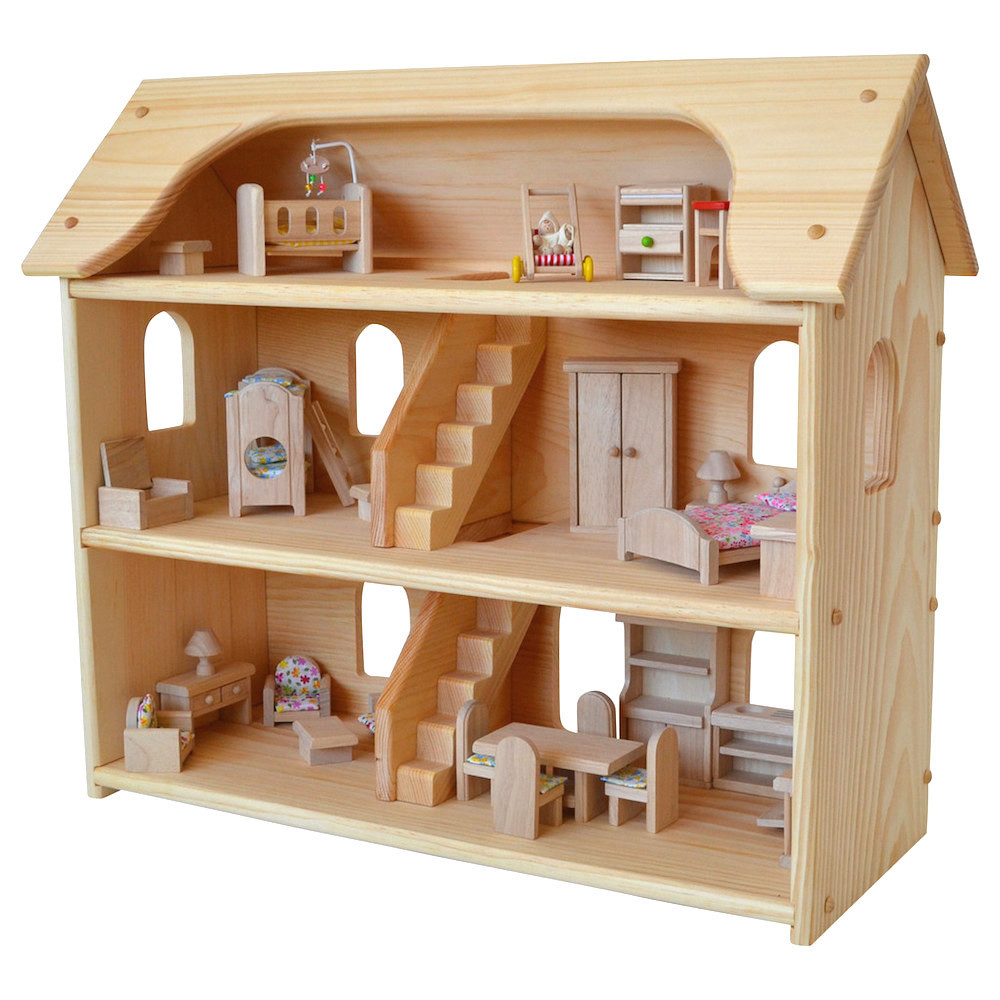

<!DOCTYPE html>
<html lang="en">
  <head>
    <meta charset="utf-8">
    <title>Presentation</title>
    <meta name="description" content="">
    <meta name="author" content="">
    <meta name="apple-mobile-web-app-capable" content="yes" />
    <meta name="apple-mobile-web-app-status-bar-style" content="black-translucent" />
    <meta name="viewport" content="width=device-width, initial-scale=1.0, maximum-scale=1.0, user-scalable=no, minimal-ui">
    <link rel="stylesheet" href="https://maxcdn.bootstrapcdn.com/font-awesome/4.4.0/css/font-awesome.min.css">
    <link rel="stylesheet" href="css/reveal.css">
    <link rel="stylesheet" href="css/theme/open.css" id="theme">

    <!-- Code syntax highlighting -->
    <link rel="stylesheet" href="lib/css/zenburn.css">

    <!-- Printing and PDF exports -->
    <script>
      var link = document.createElement( 'link' );
      link.rel = 'stylesheet';
      link.type = 'text/css';
      link.href = window.location.search.match( /print-pdf/gi ) ? 'css/print/pdf.css' : 'css/print/paper.css';
      document.getElementsByTagName( 'head' )[0].appendChild( link );
    </script>

    <!--[if lt IE 9]>
    <script src="lib/js/html5shiv.js"></script>
    <![endif]-->
  </head>

  <body>
    <div class="reveal">
      <!-- Any section element inside of this container is displayed as a slide -->
      <div class="slides">
        <section data-markdown><script type="text/template">
## Architecture, Frontend 
## and a Bit of Frontend Architecture
Jan Hein Hoogstad   
offcourse.io   
@yeehaa

<!---

Good morning everyone. Really excited to be here. I'm Jan Hein Hoogstad. In my previous life, I was a professor in philosophy and cultural studies. But nowadays, I am running a startup called Offcourse. Offcourse is going to radically change the way you learn new skills online, but that's not what I'm going to talk about today. Simply check out our website if you want to know more.

Instead, I will talk about buildings, actual buildings - houses, towers, bridges, etc. And I will talk about what they share with the constructions that we developers are building: programs, applications.

-->

</script></section><section data-markdown><script type="text/template">

"All that functional stuff, immutability, no side effects... I understand why this makes sense on the backend, but on the frontend..." 

—A Friend.

<!---

The inspiration for this presentation came from a comment that a good friend of mine made when I told him that I was going to use clojurescript as the language for the offcourse frontend. I don't remember his exact words, but he said something along the lines of:  

"All that functional stuff, immutability, no side effects... I understand why this makes sense on the backend, but on the frontend..." 

What I found interesting about his remarks was not as much the content, but the assumptions about frontend development that were implied in his words.

Let me spell them out for you:

-->


</script></section><section data-markdown><script type="text/template">

|Backend                |Frontend                     |
|---------------------  |-----------------------------|
|Complex                |Simple                       |
|Core Product           |Marketing                    |
|Long Term Investment   |Temporary Artifact           |
|Architectural Patterns |Whatever Works               |

<!---

The point of this presentation is too debunk all these assumptions about frontend architecture. It roughly consists of two parts:

-->


</script></section><section data-markdown><script type="text/template">

"Serverless" application architectures offer tremendous cost savings and colossal horizontal scaling ability, with the side benefit of encouraging loosely coupled design. The advantages are so profound, that the days of monolithic application servers might be numbered." 

—Obie Fernandez

<!--

The current transition towards so-called serverless architectures means that the frontend is becoming more and more important. Obie Fernandez, for instance, claims:

"Serverless" application architectures offer tremendous cost savings and colossal horizontal scaling ability, with the side benefit of encouraging loosely coupled design. The advantages are so profound, that the days of monolithic application servers might be numbered." 

Following this observation, seriously thinking about frontend architectures is therefore no longer a luxury but a must.
-->


</script></section><section data-markdown><script type="text/template">

"We shape our buildings; thereafter they shape us." 

—Winston Churchill

<!--

But the second, even more important reason is, that not thinking about architecture is a mistake under all circumstances. Here I'm in the company, not only of many famous architects but also statesmen like Winston Churchill who claimed that "We shape our buildings; thereafter they shape us."

-->


</script></section><section data-markdown><script type="text/template">

## Architecture
## Software and Architecture
## Frontend Architecture

<!---

This presentation consists of three parts. 

In the first, I will talk about architecture in general, how its use in software development is significally different from its physical counterpart, and why this matters.

In the second part, I will go through a some important design patterns and show what they look like as actual buildings

The last part, focusses on frontend architecture patterns in particular and how serverless changes everything.

-->


</script></section><section data-markdown><script type="text/template">

## Architecture


</script></section><section data-markdown><script type="text/template">


"Lisp isn’t a language, it’s a building material." 

—Alan Kay.

<!--- 

Alan Kay famously said that: "Lisp isn’t a language, it’s a building material." To me, this is exemplary of the way developers conceive architecture. We understand architecture in terms of the building blocks that we use, such as:

+ Languages
+ Abstractions
+ Libraries and Frameworks
+ Patterns

Although code reading groups are becoming more common, the actual artifacts that we produce - namely programs as programs - are still rarely discussed.

-->


</script></section><section data-markdown><script type="text/template">


"Architecture is not based on concrete and steel, and the elements of the soil. It's based on wonder." 

—Daniel Libeskind

<!---

Actual Architects tend to do the exact opposite. Daniel Libeskind for instance said that: 


"Architecture is not based on concrete and steel, and the elements of the soil. It's based on wonder." 

Although a bit too new-agey for me taste. It does clearly illustrate the way architects view their profession. To them, architecture is not about the building blocks that they use, but the lived spaces that emerge from these pieces.

-->


</script></section><section data-markdown><script type="text/template">


“Eiffel saw his Tower in the form of a serious object, rational, useful; men return it to him in the form of a great baroque dream which quite naturally touches on the borders of the irrational ... architecture is always dream and function, expression of a utopia and instrument of a convenience.” 

—Roland Barthes

<!---

Of course, leave it to the philosophers to go even a step further. Roland Barthes, for instance, said that:

“Eiffel saw his Tower in the form of a serious object, rational, useful; men return it to him in the form of a great baroque dream which quite naturally touches on the borders of the irrational ... architecture is always dream and function, expression of a utopia and instrument of a convenience.” 

To Barthes, architecture is also a expression of a future that can be, of could have been. 

-->


</script></section><section data-markdown><script type="text/template">


"Architecture starts when you carefully put two bricks together. There it begins." 

—Ludwig Mies van der Rohe

<!---

To sum this up: Architecture is three things at the same time:

1. Lived Spaces
2. An expression of a desired future
3. But, of course, it's also simply assemblage of building blocks.

Or, as the famous modernist architect Mies van der Rohe said: "Architecture starts when you carefully put two bricks together. There it begins." 

-->


</script></section><section data-markdown><script type="text/template">

## Software and Architecture

<!---

In the next section of this presentation, I will look at different software architecture patterns by comparing them to actual buildings.

-->


</script></section><section data-markdown><script type="text/template">



"The main principle behind layered architectures is that of 'separation of responsibility'. Each layer is responsible for a finite amount of work."

—Jean Paul Boodhoo

<!---

The best known, and probably still most commonly used, software architecture pattern is the so-called layered architecture. 

"The main principle behind layered architectures is that of 'separation of responsibility'. Each layer is responsible for a finite amount of work."

This is comparable to classic home layout, as idealized in the dollhouse in the picture. Each floor has a clearly defined responsibility. The bottom layer is the living room, the middle the parent's bedroom, and the top one is where the baby sleeps.

In software development, a layered architecture can have many layers, but in its simplest form it consists of a persistence layer with business and presentation layers build on top of it.

-->


</script></section><section data-markdown><script type="text/template">


"Unfortunately, people using layered architectures can often run into a scenario where they introduce an unnecessary amount of coupling between layers of their application."

—Jean Paul Boodhoo

<!--

In practice, however, layered architectures often end up like the Escher print above. This is due to the fact that layered architectures usually end up highly coupled. As described in this quote:

"Unfortunately, people using layered architectures can often run into a scenario where they introduce an unnecessary amount of coupling between layers of their application."

Which results in fragile applications that are difficult to change or extend.

-->


</script></section><section data-markdown><script type="text/template">


"The Microkernel architectural pattern applies to software systems that must be able to adapt to changing system requirements."

—Dharmesh Sheta

<!--

The microkernel patters aims to correct the flaws of the layered architecture. This "architectural pattern applies to software systems that must be able to adapt to changing system requirements."

The 'Oude Kerk' in Amsterdam actually followed a very similar architectural pattern. First look at its original state...

-->


</script></section><section data-markdown><script type="text/template">


"It separates a minimal functional core from extended functionality and customer-specific parts. The microkernel also serves as a socket for plugging in these extensions and coordinating their collaboration."

—Dharmesh Sheta

<!--

And compare that to how it looks now.

This quote about the microkernel pattern equally applies to the architecture of the 'Oude Kerk':

"It separates a minimal functional core from extended functionality and customer-specific parts. The microkernel also serves as a socket for plugging in these extensions and coordinating their collaboration."

-->


</script></section><section data-markdown><script type="text/template">


"In short, the microservice architectural style is an approach to developing a single application as a suite of small services, each running in its own process and communicating with lightweight mechanisms, often an HTTP resource API."

—Martin Fowler

<!--

No presentation on software architecture nowadays, however, would be complete without a discussion of the current favorite: microservices. Martin Fowler defines them as follows:

"... the microservice architectural style is an approach to developing a single application as a suite of small services, each running in its own process and communicating with lightweight mechanisms, often an HTTP resource API."

Just like most modern airports consist of separate terminals and other building that each serves a particular purpose. The microservices architecture loses the concept of a predefined whole.

In opposition to the microkernel architecture, microservices also do not presuppose a central hub to work properly. Each service functions independently as well as in conjunction with others.

-->


</script></section><section data-markdown><script type="text/template">

| Characteristics                | Solution                            |
|--------------------------------|-------------------------------------|
| Componentization               | Containers / Functions as a Service |
| Smart Endpoints and Dumb Pipes | Messaging Bus                       |
| Design for Failure             | Asynchronous Coupling               |
| Evolutionary Design            | Continuous Deployment Pipeline      |


</script></section><section data-markdown><script type="text/template">


"The microservice community favours an alternative approach: smart endpoints and dumb pipes. Applications built from microservices aim to be as decoupled and as cohesive as possible - they own their own domain logic and act more as filters in the classical Unix sense - receiving a request, applying logic as appropriate and producing a response."

—Martin Fowler

<!--

In this list of characteristic, I want to point out the 'Smart Endpoints, Dumb Pipes' in particular. Martin Fowler describes this as follows:

"The microservice community favours an alternative approach: smart endpoints and dumb pipes. Applications built from microservices aim to be as decoupled and as cohesive as possible - they own their own domain logic and act more as filters in the classical Unix sense - receiving a request, applying logic as appropriate and producing a response."

This should be instantly recognizable to any functional programmers. In a microserver architecture. Each service basically works as a - pure or impure - function, with clear inputs and outputs. To me, a microservices architecture and functional programming are therefore a natural fit.

Most importantly, though, is the fact that the microservices actually forces the developer to think about her specific domain. As opposed to all other patterns, it's not the domain knowledge that needs to fit the architecture, but vice versa. A properly executed microservices architecture values good design.

-->


</script></section><section data-markdown><script type="text/template">

## Frontend Architecture


</script></section><section data-markdown><script type="text/template">

"All that functional stuff, immutability, one directional data-flow, no side effects... I understand why this makes sense on the backend, but on the frontend..." 

—A Friend.

<!---

From a well-designed architecture, it's a small step back to my friend's objection.

<!---

"All that functional stuff, immutability, one directional data-flow, no side effects... I understand why this makes sense on the backend, but on the frontend..." 


By now, I have hopefully convinced you that it's important to think about architecture in general. But I haven't explained why and how this applies to the frontend. 

My answer will be a simple one though. A serverless frontend architecture should be shaped after a microservices architecture. Even though the code probably on the same client, rather than distributed, it's still valuable the application as if it's a collection of services.

Before I explain the what and how of the serverless frontend architecture that we use at offcourse, I want to discuss some common alternatives.

1. Shantytown Architecture
2. Frameworks

-->


</script></section><section data-markdown><script type="text/template">


"Too many of our software systems are, architecturally, little more than shantytowns. Investment in tools and infrastructure is often inadequate and the tools that are used are primitive. Parts of the system grow unchecked, and the lack of architecture and planning allows problems in one part of the system to erode and pollute adjacent portions. Deadlines loom like monsoons, and architectural elegance seems unattainable."

—Brian Foote and Joseph Yoder

<!---

Shantytown aka big ball of mud aka spaghetti code

-->

</script></section><section data-markdown><script type="text/template">


"More Productive Out Of The Box." 

—Ember
    
<!---

So what's the first stage to clean up this shantytown, this big ball of mud, or jquery spaghetti... a framework ofcourse. At first glance, frameworks have a lot of advantages. Like the slogan for the Ember framework states. They make the coder more productive out of the box. They also replace the law of the jungle that characterizes the shantytown architecture with conventions and best practices. In short, frameworks are the software equivalent to prefab houses.

-->


</script></section><section data-markdown><script type="text/template">


"Compromise makes a good umbrella, but a poor roof." 

—James Russell Lowell

<!---

Unfortunately, frameworks also have the same flaws as prefab houses. They function as a 'one size fits all' solution. While this may help you get started in the beginning, they often make it difficult to scale and customize later on.

While I have nothing against frameworks, I would argue that they little to do with architecture. Architecture is about finding specific solutions to specific problems. To make, spaces livable for the individual users. Framework tend to do the opposite.

-->

</script></section><section data-markdown><script type="text/template">


<!---
misnomer
-->

</script></section><section data-markdown><script type="text/template">

| Serverless Frontend                 | Clojurescript                       |
|-------------------------------------|-------------------------------------|
| Componentization via Services       | Component                           |
| Smart Endpoints and Dumb Pipes      | Core.Async                          |
| Design for Failure                  | Component + Core.Async              |
| Evolutionary Design                 | Build Artifact Plain HTML/CSS/JS    |


</script></section><section data-markdown><script type="text/template">

## Conclusion


</script></section><section data-markdown><script type="text/template">

Engineering is not a science. Science studies particular events to find general laws. Engineering design makes use of the laws to solve particular practical problems. In this it is more closely related to art or craft.

—Ove Arup


</script></section><section data-markdown><script type="text/template">


"A House Is Not A Home" 

—Burt Bacharach & Hal David

<!---

No one has summarized this clearer than the great philosophers Burt Bacharach and Hal David, when they used the voice of Dionne Warwick to claim that: "A House is Not a Home"

And even though I completely agree with them, I would just like to add one tiny thing...

-->


</script></section><section data-markdown><script type="text/template">


"Most Homes Are Also Houses"

—Jan Hein Hoogstad


</script></section><section data-markdown><script type="text/template">

### offcourse.io  
### @yeehaa  
github.com/yeehaa123/presentation-moonconf/blob/master/slides.md

</script></section>
      </div>
    </div>

    <script src="lib/js/head.min.js"></script>
    <script src="js/reveal.min.js"></script>

    <script>
      // Full list of configuration options available at:
      // https://github.com/hakimel/reveal.js#configuration
      Reveal.initialize({
        controls: true,
        progress: true,
        history: true,
        center: true,

        transition: 'slide', // none/fade/slide/convex/concave/zoom

        // Optional reveal.js plugins
        dependencies: [
          { src: 'lib/js/classList.js', condition: function() { return !document.body.classList; } },
          { src: 'js/plugin/markdown/marked.js', condition: function() { return !!document.querySelector( '[data-markdown]' ); } },
          { src: 'js/plugin/markdown/markdown.js', condition: function() { return !!document.querySelector( '[data-markdown]' ); } },
          { src: 'js/plugin/highlight/highlight.js', async: true, condition: function() { return !!document.querySelector( 'pre code' ); }, callback: function() { hljs.initHighlightingOnLoad(); } },
          { src: 'js/plugin/zoom-js/zoom.js', async: true },
          { src: 'js/plugin/notes/notes.js', async: true },
          { src: 'js/plugin/custom.js', async: true }
        ]
      });
    </script>
  </body>
</html>
